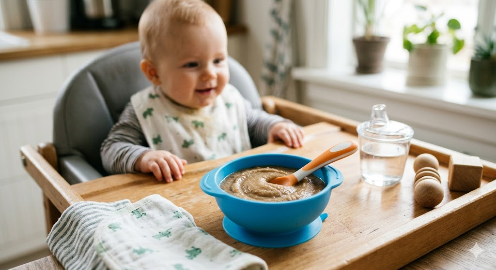

A soft, nutritious, and iron-rich meal made with tender liver and creamy potatoes. This purée is perfect for babies over 6 months who are starting solids and need healthy nutrients for growth and development.

10 mins
20 mins
2 Portions
Easy
A simple step-by-step guide on preparing a healthy liver and potato purée for babies over 6 months.
Video credit: @instagram.com/mummy_la